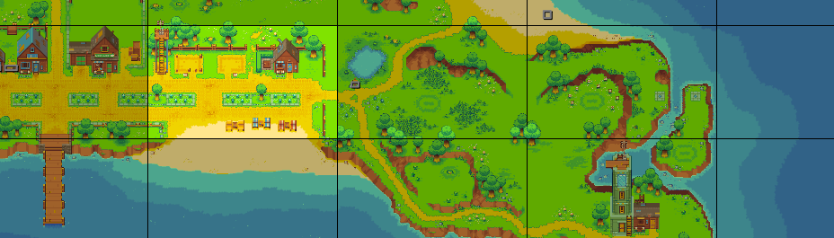
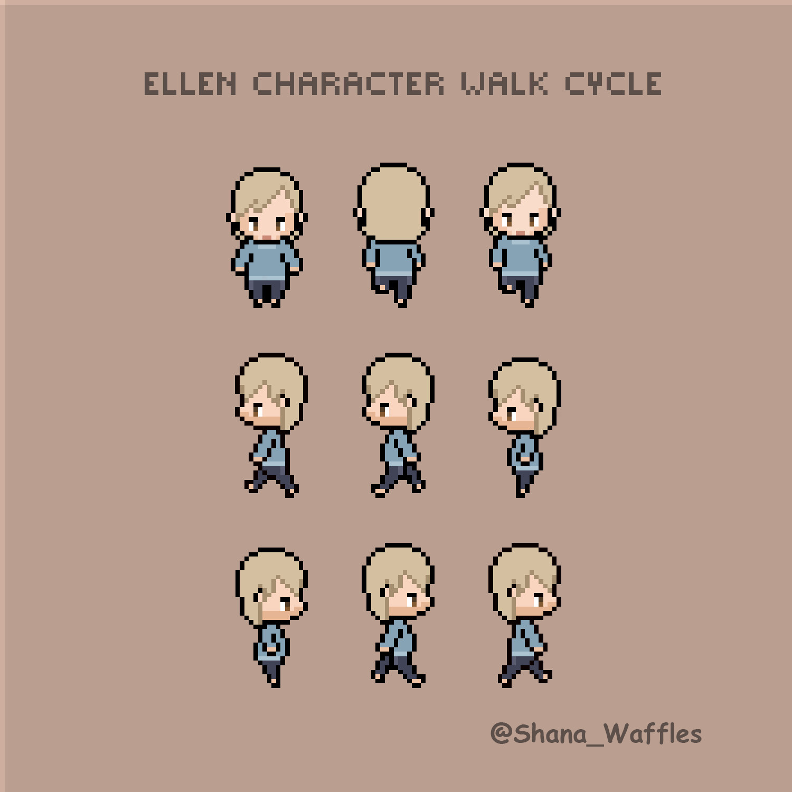

Témoignages Codeloccol
Ce que disent nos étudiants de leur expérience d'apprentissage

Kina
Developpeur Full-Stack
Codeloccol m'a donné les compétences techniques et la confiance nécessaires pour devenir développeuse. L'apprentissage par pairs et l'accompagnement des coachs ont fait toute la différence dans mon parcours.

Mahamadou Brah
Developpeur Full-Stack
La méthode d'enseignement de Codeloccol est révolutionnaire. J'ai pu maîtriser HTML, CSS, JavaScript et React en quelques mois grâce à la pratique intensive.

Ibrahim
Designer UX/UI
Les projets pratiques m'ont permis de construire un portfolio solide. Aujourd'hui, je travaille sur des projets d'agritech et d'e-commerce grâce aux bases acquises ici.

Yacoubou
Developpeur Front-End & Mobil
De HTML/CSS au react Native & Flutter codeloccol m'a accompagné
dans une progression logique etrusturé.La
communauté d'entraide est acceptionnelle et
m'a motivé tout au long du parcours
Mariam
Chef projet
Au-delà de code , codeloccol m'a appris la gestion de projet, Git, et le soft skill. ces competence me servent quotidiennement dans mon role de chef de projet.
Haoua
Entrepreneure
Grace a codeloccole j'ai pu créer pas propre startup tech. La formation compléte m'a donnée tous les outils pour develloper des solution innovantes pour l'afrique.

Yacouba
Entrepreneur